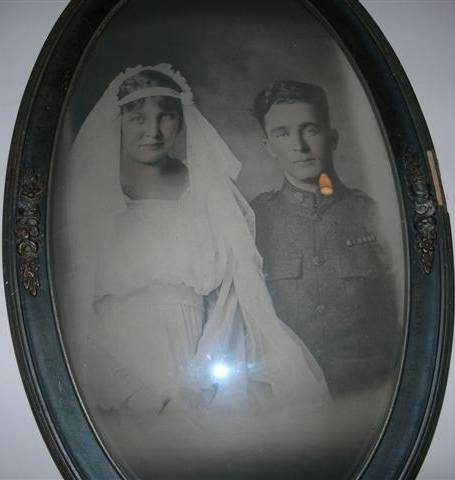

Mabel Glenn
1899 - 1959
Mabel Wogsland was born May 3rd, 1899 to Ole and Oletta Wogsland in Tomahawk, Wisconsin. She married Elra Glenn, also of Tomahawk, and together they had 7 children, mostly girls, but twin boys. She died in Sacramento, CA on April 5, 1959.

Mabel with Elra in wedding garb.
Parents:
Oletta Solum Wogsland
1875 - 1963
Ole Martin Wogsland
c.1862 - 19??
Offspring:
Bonnie Jean Glenn 19?? - ????
Mary Ellen Glenn
1921 - 1996
Raymond Glenn 19?? - ????
Roy Glenn 19?? - ????
Eunice Glenn 19?? - ?
Christine Glenn 19?? - 19?? (died as a child)
Connie Glenn 19?? - ????
References:
1. Jewelie Randall
2. Neal Wogsland's files
Last Modified: 4 September 2005 by
Bradley J. Wogsland
.